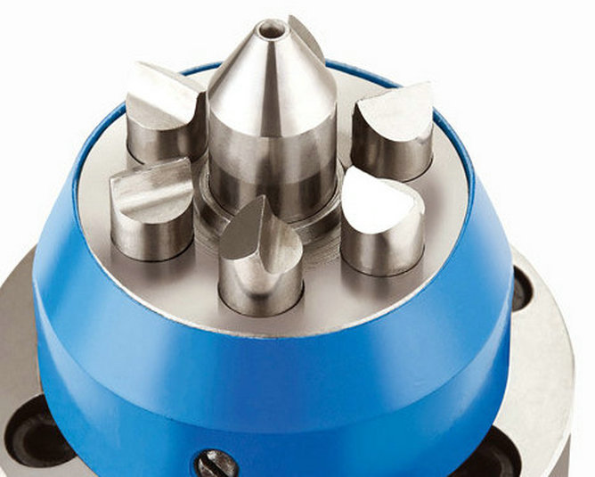
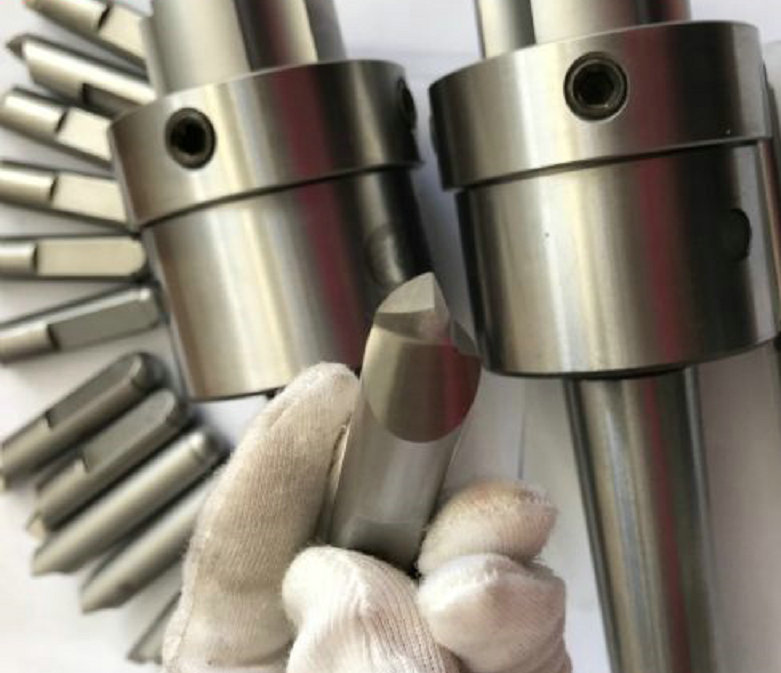
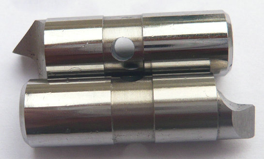

YDTech® Die mechanischen Mitnehmerbolzen für Stirnseitenmitnehmer sind wesentliche Spannmittel für die rotationssymmetrische Bearbeitung.


Mechanische Mitnehmerbolzen – auch als Mitnahmebolzen oder Antriebsstifte bezeichnet – sind gehärtete Stifte, die im Stirnseitenmitnehmer radial angeordnet sind. Sie dringen beim Anpressen des Werkstücks leicht in dessen Stirnfläche ein und übertragen so den Drehmoment von der Maschinenspindel auf das rotierende Bauteil. Im Gegensatz zu hydraulischen oder pneumatischen Lösungen arbeiten mechanische Mitnehmerbolzen rein formschlüssig über Federkraft oder über einen zentralen Sporn. Sie zeichnen sich durch einfache Konstruktion, hohe Zuverlässigkeit und geringen Wartungsaufwand aus.


Wir produzieren mechanische Mitnehmerbolzen für alle gängigen Stirnseitenmitnehmer . Dank moderner CNC-Schleifmaschinen und Wärmebehandlungsanlagen erreichen wir Härten von bis zu 62 HRC bei gleichzeitig engen Toleranzen von ±0,005 mm. Jeder Bolzen wird nach Ihrer Zeichnung oder einem Muster gefertigt.
Sie suchen einen zuverlässigen Lieferanten für mechanische Mitnehmerbolzen für Stirnseitenmitnehmer? Dann kontaktieren Sie uns noch heute. Senden Sie uns Ihre Zeichnung und wir erstellen Ihnen innerhalb von 48 Stunden ein unverbindliches Angebot. Musterteile liefern wir bereits ab 14 Tagen.
Wir freuen uns darauf, Ihr technischer Partner für Präzisions-Antriebselemente „Made in China“ zu werden – mit deutscher Qualitätsmentalität und chinesischer Effizienz.
- Startseite
- Produkte
- Kontakt
- Exzentrische Mitnehmerbolzen
- halb versetzte Antriebsstifte
- Zentrische Mitnahmebolzen
- Standard-Mitnehmermesser
- abgefachte Mitnahmebolzen
- Rechtslauf Antriebszapfen
- Linkslauf-Mitnehmerstifte
- Mitnehmerbolzen mit voller Mitnahmebreite
- langlebige Mitnehmerbolzen
- Mitnehmerbolzen mit Meißelkante
- schwimmende Mitnehmer
- Kraftbetätigte Mitnehmerbolzen
- hydraulische Anschlussstifte
- mechanische Anschlussstifte
- bewegliche Mitnehmerbolzen
- feste Anschlussstifte
- Hartmetall Mitnahmebolzen
- Werkzeugstahl S7 Bolzen
- Wechselbare Mitnehmerbolzen
- Mitnehmerstift